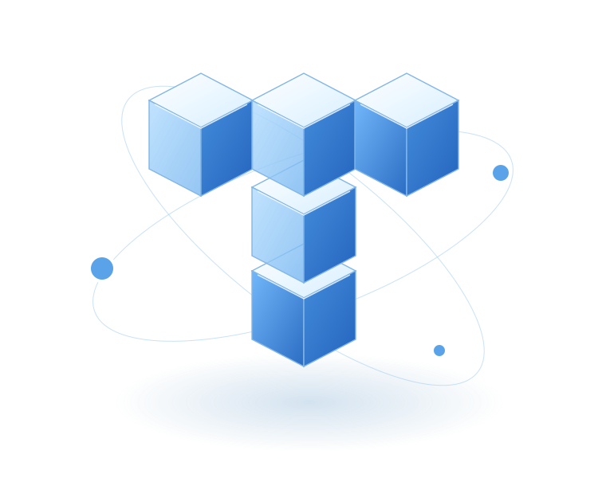

01
Civic & GovTech
Public services that are easier to access, simpler to manage, and more connected to people.
Explore the possibilitiesDesign, engineering, and data — connected to build useful digital products and systems.
A little curiosity goes a long way.
Web and mobile experiences designed around the people using them.
We’re Trasier Technology, a Kathmandu-based team building software around real people, practical needs, and the systems behind everyday work.
From the first user journey to the information moving behind the screen, we connect the pieces that make a product useful.
Get to know TrasierFrom the first conversation to the systems behind the screen, we connect design, engineering, and local understanding.
Public services that are easier to access, simpler to manage, and more connected to people.
Explore the possibilitiesUseful, intuitive digital experiences that turn an everyday task into something that just works.
Explore the possibilitiesPractical intelligence for real work. Understand documents, find answers, and reduce repetitive tasks.
Explore the possibilitiesBring location into the picture, with maps and spatial tools that turn context into clearer decisions.
Explore the possibilitiesMake the information you already have easier to understand, trust, and act on.
Explore the possibilitiesConnect the tools, teams, and information you rely on — without adding more friction.
Explore the possibilitiesTechnology is only useful when it works for the people using it. We stay close to the problem, work openly, and build around the realities of everyday life.
Get to know TrasierAsk the right questions. Understand the people, the context, and what a useful outcome really looks like.
Turn a clear problem into a considered experience, with practical engineering behind every interaction.
Put the work into people’s hands. Listen to what happens next and use that learning to make it better.

 One connected experience. Citizens to road offices.
One connected experience. Citizens to road offices.
सडक सुझाव
A pothole. A broken footpath. A flooded stretch of road. Photograph it, put it on the map, and follow your report as the responsible road office responds.
Features verified with the Google Play listing. Coverage depends on the participating road authority.
 From the field
From the fieldA company update on Sadak Sujhav, with before-and-after photos from roads around Kathmandu.
Read the storyThe team’s update on bringing Lalitpur and Bhaktapur into the reporting network.
Read the updateWhy we built a simpler connection between the people using our roads and the teams maintaining them.
Read the storyA public service, a product idea, or a problem you can’t quite put your finger on. We’d like to hear it.